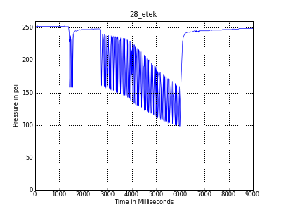

<table id="regresults" summary="28_etek" >
    <thead`
    	<tr>
        	<th scope="col" class="rounded-company" colspan='4'>28_etek</th>
        </tr>
    </thead>
        <tfoot>
    	<tr>
        	<td colspan="3" class="rounded-foot-left"><em><a href="28_etek/28_etek.csv" target="_blank">Raw Data in csv format</a></em></td>
        	<td class="rounded-foot-right">&nbsp;</td>
        </tr>
    </tfoot>
    <tbody>
    	<tr>
        	<td colspan="3">DM7 on 03/13/09 at 15bps, shows the effects of tank pressure (1.5k) on recharge, this is not the normal recharge one sees when tank pressure is at an optimal levels</td>
        	<td></td>
        </tr>
        <tr>
        	<td colspan='2'><a href="28_etek/28_etek.png" target="_blank"></a></td>
            <td colspan='2'><a href="regtesting/28_etek/28_etek_single.png" target="_blank"></a></td>
        </tr>
        
        <tr>
        	
        </tr>
    </tbody>
</table>
